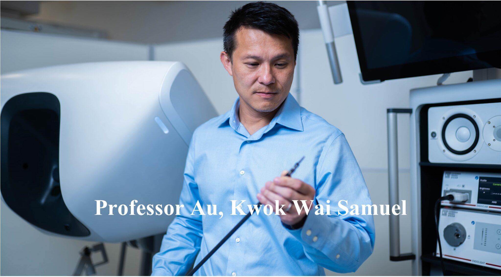
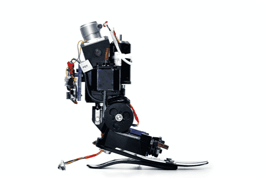
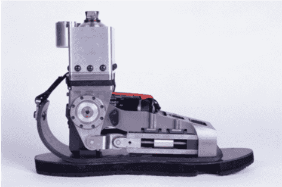
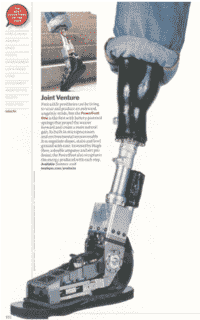
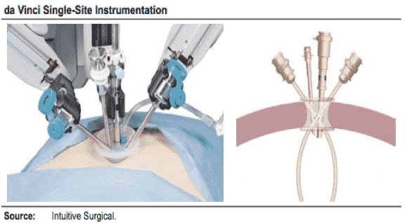
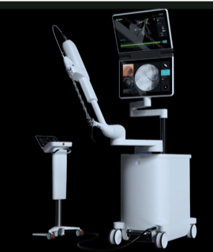
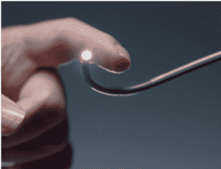

Short Biography
Dr. Au is a Professor of the Department of Mechanical and Automation Engineering and Department of Surgery (by courtesy) at CUHK. He is also the Founding Co-Director of Multiscale Medical Robotics Center of InnoHK Research Cluster. Dr. Au received the B.Eng. and M.Phil degrees in Mechanical and Automation Engineering from the Chinese University of Hong Kong (CUHK), Hong Kong in 1997 and 1999, respectively. He completed his Ph.D. degree in Mechanical Engineering at MIT in 2007. Prof. Hugh Herr, Dr. Au, and other colleagues from MIT Biomechatronics group co-invented the MIT Powered Ankle-foot Prosthesis. This invention was later commercialized by iWalk, Inc.
Before joining CUHK (2016), he was the manager of Systems Analysis of the New Product Development Department at Intuitive Surgical, Inc. At Intuitive Surgical, he co-invented and was leading the software and control algorithm development for the FDA cleared da Vinci Si Single-Site surgical platform (2012), Single-Site Wristed Needle Driver (2014), and da Vinci Xi Single-Site surgical platform (2016). Since the official launch at Dec 2012, over 100K patients have received the single incision surgery through this platform. He was also a founding team member for the early development of Intuitive Surgical’s FDA cleared robot-assisted catheter system, da Vinci ION system from 2008 to 2012.
Dr. Au co-authored over 48 peer-reviewed manuscripts and conference journals, 17 granted US patents/EP, and 3 pending US Patents. He has won numerous awards including the first prize in the American Society of Mechanical Engineers (ASME) Student Mechanism Design Competition in 2007, Intuitive Surgical Problem Solving Award in 2010, and Intuitive Surgical Inventor Award in 2011.
MIT Ankle-Foot Prosthesis :


Fig. 1. Early prototypes of the Powered Ankle-Foot Prosthesis [1] [2]
Video 1. Early clinical validation on an amputee patient with the proposed prosthesis (2007)
This invention was named one of the Best Inventions of Year by TIME magazine in 2007 and was later commercialized by iWalk, Inc.

Fig. 2. Times Magazine (2007)
Video 2. iWalk, Inc. / BiONXMED, Inc.
References:
[1] Herr, H., Au, S. K., Paluska, D., Dilworth P., inventors; Artificial ankle-foot system with spring, variable-damping, and series-elastic actuator components. Patent No: US10,342,681B1. Date of Patent: Jul 9, 2019.
[2] Herr, H., Weber, J. A., Au, S. K., Deffenbaugh, B. W., Magnusson, L. H., Hofmann A. G., Aisen, B. B., inventors; Powered Ankle-Foot Prosthesis. Patent No: US8512415. Date of Patent: Aug 20, 2013.
[3] S. K. Au, Weber J., and Herr, H., “Powered ankle-foot prosthesis improves walking metabolic economy,” IEEE Transactions on Robotics, vol. 25, issue 1, pp. 51 – 66, Feb 2009.
da Vinci Single-Site Platform:

Fig. 3. da Vinci Single-Site platform
References:
[1] Prisco, M. G., Au, S. K., Inventors; Curved Cannula Surgical System Control. Patent Num: US8888789. Filing date: Nov 13, 2009.
da Vinci ION system:


Fig. 4. da Vinci ION
References:
[1] Duindam, V., Mohr, C. J., Fenech, C., Prisco, G. M., Au, S. K., and C. Q. Donhowe, Inventors; Catheter with removable vision probe. Patent Num: US9452276. Filing date: Oct 14, 2011.
[2] Prisco, M. G., Au, S. K., Inventors; Drive force control in medical instrument providing position measurements. Patent Num: US8644988. Filing date: May 14, 2010.